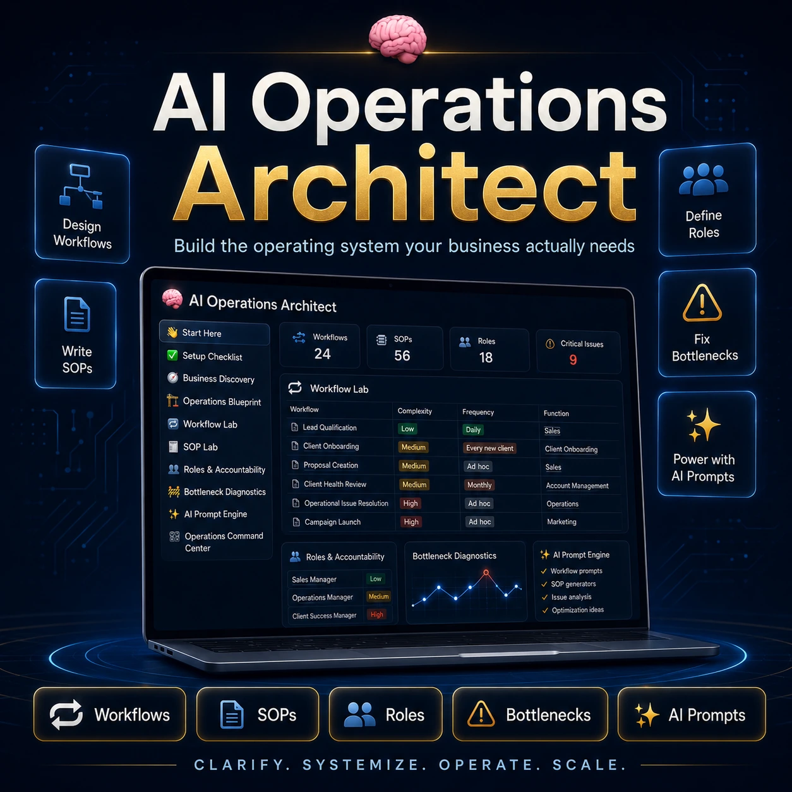
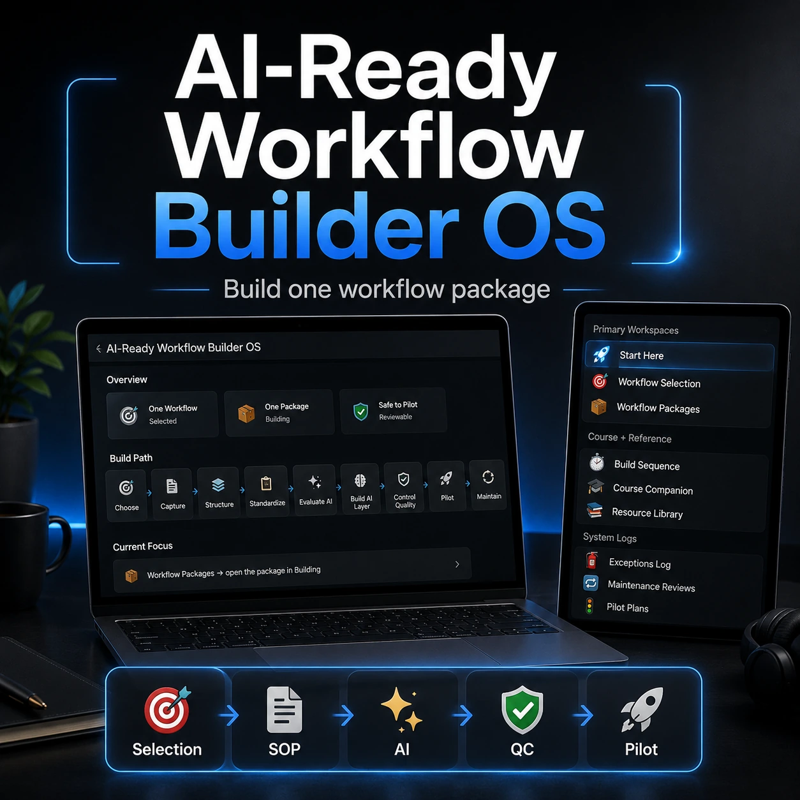
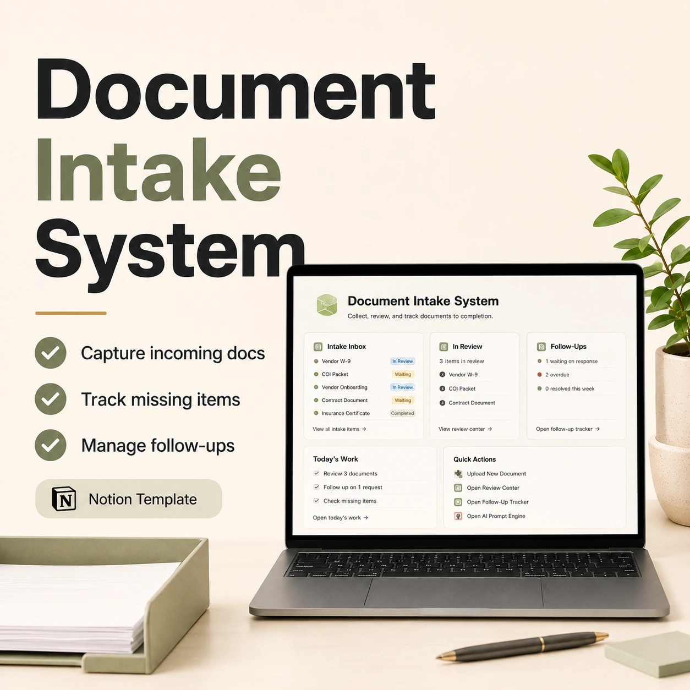
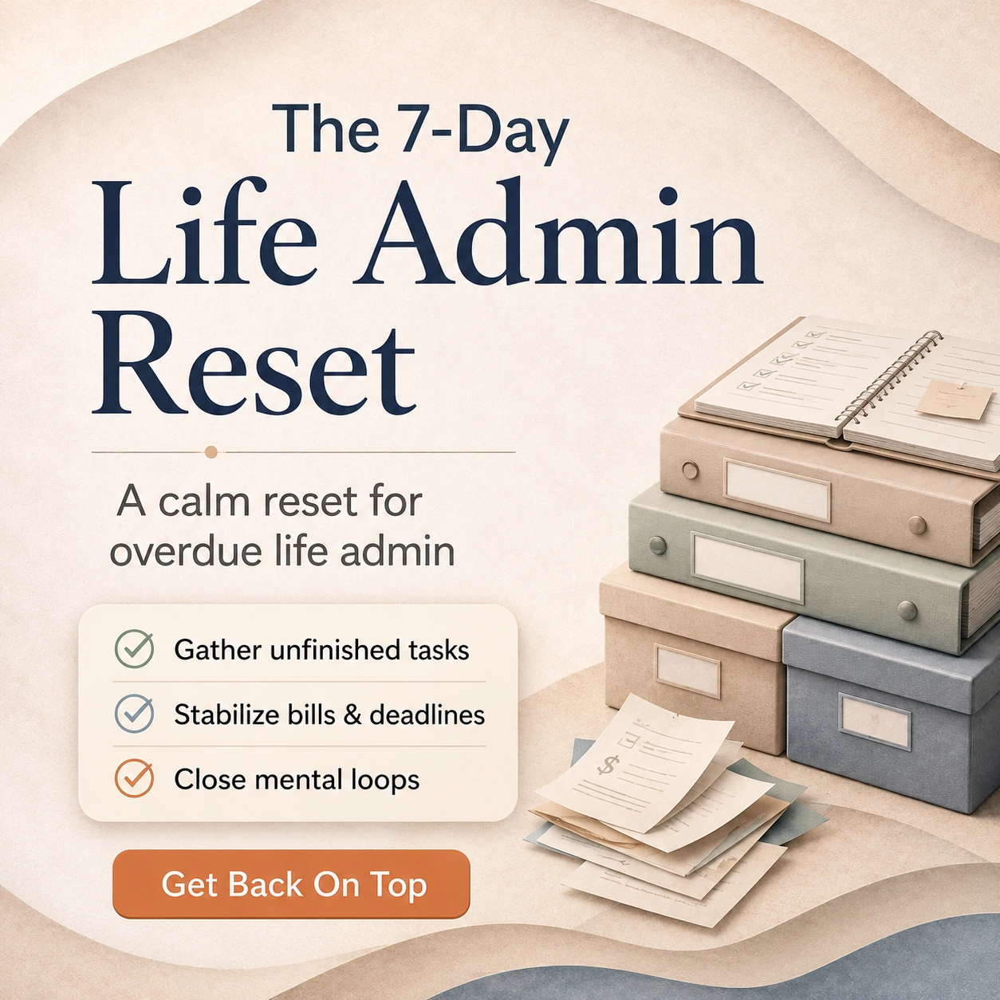

Premium BundleBest for: learning + implementation
Workflow Builder Bundle
Course + Notion OS for turning real workflows into SOPs, bounded AI support, QC checkpoints, and pilot-ready implementation assets.
Practical Notion templates and digital tools for workflow building, client delivery, AI operations, compliance, documents, payment follow-up, event planning, and life admin recovery.


Start with the problem you are trying to clean up. The catalog is grouped by workflow building, client delivery, compliance control, payment follow-up, and personal admin recovery.
The clearest starting points for buyers who want the strongest system first.
Course + Notion OS for turning real workflows into SOPs, bounded AI support, QC checkpoints, and pilot-ready implementation assets.

Design workflows, SOPs, roles, bottleneck diagnostics, and AI-supported improvements.
A calm life admin system for capturing messy tasks, seeing what needs attention, and taking the next clear step.
Grouped by buyer problem so the store feels organized instead of overwhelming.
Learn the method, then implement it inside the Notion OS.
Design workflows, SOPs, roles, bottleneck diagnostics, and AI-supported improvements.

Build one documented, reviewable, AI-ready workflow package from selection to pilot.

Learn how to turn workflows into SOPs, review checkpoints, and AI-ready implementation systems.

A structured vault for reusable prompts, workflow packs, prompt playbooks, and practical AI utility.

Run onboarding, project delivery, SOPs, reviews, and client rollout from one clean workspace.
Manage client jobs, approvals, suppliers, materials, costs, payments, and production delivery.

Plan events with tasks, vendors, budgets, timelines, bookings, promo assets, and coordination views.

Track renewals, permits, inspections, missing documents, follow-ups, and weekly review.

Collect incoming documents, review submissions, track missing items, and manage follow-ups.

Track overdue invoices, draft polite reminder emails for review, and log each run.
A calm system for capturing messy tasks, seeing what needs attention, and taking the next clear step.

A practical guide for getting back on top of bills, paperwork, appointments, renewals, and overdue tasks.
Clear your head, choose top priorities, track important items, and reset the week.

Track freelance income, business expenses, deductions, and quarterly tax savings.
Every product is positioned around a specific bottleneck: workflow building, delivery, events, recovery, AI operations, compliance, documents, or payment follow-up.
The goal is to give buyers a system they can understand quickly, duplicate, and shape around real work.
Pick the product that matches your current bottleneck, then duplicate the system and start organizing the work in one place.
No. These are independent templates and digital tools created by DeekeBiz.
Each product links to its Gumroad page.
Yes. Notion templates can be duplicated and adjusted to fit your workflow.